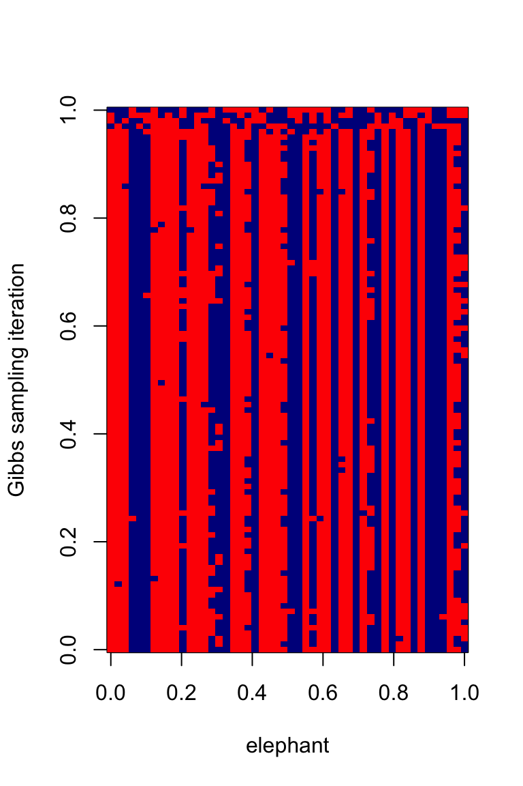

Last updated: 2026-01-24
Checks: 7 0
Knit directory: fiveMinuteStats/analysis/
This reproducible R Markdown analysis was created with workflowr (version 1.7.1). The Checks tab describes the reproducibility checks that were applied when the results were created. The Past versions tab lists the development history.
Great! Since the R Markdown file has been committed to the Git repository, you know the exact version of the code that produced these results.
Great job! The global environment was empty. Objects defined in the global environment can affect the analysis in your R Markdown file in unknown ways. For reproduciblity it’s best to always run the code in an empty environment.
The command set.seed(12345) was run prior to running the
code in the R Markdown file. Setting a seed ensures that any results
that rely on randomness, e.g. subsampling or permutations, are
reproducible.
Great job! Recording the operating system, R version, and package versions is critical for reproducibility.
Nice! There were no cached chunks for this analysis, so you can be confident that you successfully produced the results during this run.
Great job! Using relative paths to the files within your workflowr project makes it easier to run your code on other machines.
Great! You are using Git for version control. Tracking code development and connecting the code version to the results is critical for reproducibility.
The results in this page were generated with repository version 828954a. See the Past versions tab to see a history of the changes made to the R Markdown and HTML files.
Note that you need to be careful to ensure that all relevant files for
the analysis have been committed to Git prior to generating the results
(you can use wflow_publish or
wflow_git_commit). workflowr only checks the R Markdown
file, but you know if there are other scripts or data files that it
depends on. Below is the status of the Git repository when the results
were generated:
Untracked files:
Untracked: figure/
Note that any generated files, e.g. HTML, png, CSS, etc., are not included in this status report because it is ok for generated content to have uncommitted changes.
These are the previous versions of the repository in which changes were
made to the R Markdown
(analysis/gibbs_structure_simple.Rmd) and HTML
(docs/gibbs_structure_simple.html) files. If you’ve
configured a remote Git repository (see ?wflow_git_remote),
click on the hyperlinks in the table below to view the files as they
were in that past version.
| File | Version | Author | Date | Message |
|---|---|---|---|---|
| Rmd | 828954a | Peter Carbonetto | 2026-01-24 | wflow_publish("analysis/gibbs_structure_simple.Rmd") |
| Rmd | 5db660c | Peter Carbonetto | 2026-01-24 | Further updates to the gibbs_structure_simple vignette. |
| Rmd | 8973452 | Peter Carbonetto | 2026-01-24 | Yet more updates to the gibbs_structure_simple vignette. |
| Rmd | db927df | Peter Carbonetto | 2026-01-24 | Fixed a couple links. |
| Rmd | 8bded2d | Peter Carbonetto | 2026-01-24 | More updates to the gibbs_structure_simple vignette. |
| Rmd | 5314608 | Peter Carbonetto | 2026-01-23 | Updates to the gibbs_structure_simple vignette. |
| html | 5f62ee6 | Matthew Stephens | 2019-03-31 | Build site. |
| Rmd | 0cd28bd | Matthew Stephens | 2019-03-31 | workflowr::wflow_publish(all = TRUE) |
| html | fbb6c48 | stephens999 | 2018-05-02 | Build site. |
| Rmd | 8183f19 | stephens999 | 2018-05-02 | workflowr::wflow_publish("analysis/gibbs_structure_simple.Rmd") |
See here for a PDF version of this vignette.
Be familiar with Bayesian inference for the two class problem and conjugate Bayesian analysis for a binomial proportion.
Suppose we observe genetic data on a sample of \(n\) elephants at \(R\) locations (“loci”) in the genome. For simplicity, we will assume the elephants are haploid; that is, they have just one copy of their genome. And we will assume that there are just two genetic types (“alleles”) at each locus, which we will label as 0 and 1.
We will further assume that there are two type of elephant: forest elephants and savanna elephants, and that the allele frequencies in forest elephants are different from those in savanna elephants, but that the allele frequencies for each of these two groups are unknown. Also, we do not know which samples are forest elephants and which are savanna elehants. Our goal is to infer both these sets of unknowns: (i) which elephants are forest and which are savanna; (ii) what are the allele frequencies in each group of elephants.
Let \(x_i\) denote the genetic data for individual \(i\) (\(i = 1,\dots, n\)). Thus, \(x_i\) is a binary vector (a vector of zeros and ones) of length \(R\). Let \(X\) denote the combined genetic data, \(X = (x_1, \dots, x_n)\).
Let \(z_i \in \{0,1\}\) denote the group (forest vs. savanna) of individual \(i\), and let \(Z\) denote the vector \(Z = (z_1, \dots, z_n)\).
Let \(P_{kj}\) denote the frequency of the 1 allele at locus \(j\) in group \(k\) (\(j = 1, \dots,R\), \(k = 0, 1\)). (Here, 0 = forest and 1 = savanna.) Let \(P_k\) denote the vector \((P_{k1}, \dots, P_{kR})\), and let \(P\) denote all the (unknown) allele frequencies \(P = (P_0, P_1)\).
With this notation in place, we can state the problem, which is to infer the unknowns \(P\) and \(Z\) from the genetic data \(X\).
To perform Bayesian inference for \(Z\) and \(P\), we need to specify the likelihood, \(p(X \mid Z, P)\), and a prior distribution, \(p(Z, P)\).
For each individual, we will assume that if we knew its group of origin, and we knew the allele frequencies in each group, then the genetic data at the different markers are independent draws from the relevant allele frequencies. This is exactly the model assumed here. In mathematical notation, we assume \[ p(x_i \mid z_i, P) = \prod_{j=1}^R P_{{z_i}j}^{x_{ij}}(1 - P_{{z_i}j})^{1 - x_{ij}}. \] All the subscripts here make this difficult to read. To make things easier to read, we can replace \(z_i\) with \(k\): \[ p(x_i \mid z_i = k, P) = \prod_{j=1}^R P_{kj}^{x_{ij}}(1 - P_{kj})^{1 - x_{ij}}. \]
We will further assume that the different individuals are independent: \[ p(X \mid Z, P) = \prod_{i=1}^n p(x_i \mid z_i, P). \] This completes specification of the likelihood.
We will assume that \(P\) and \(Z\) are a priori independent, so \(p(P,Z) = p(P) \, p(Z)\). This assumption seems reasonable: before seeing the genetic data (\(X\)), telling you the allele frequencies in the two groups would not tell you anything about the group membership of the elephants. (Of course, after seeing the genetic data \(X\), the allele frequencies would help classify the individuals, so \(P\) and \(Z\) are not going to be a posteriori independent. However, here we are concerned with the prior, not the posterior.)
For the prior on \(P\), we will further assume that the allele frequencies in each group at each locus are independent, so \(p(P) = \prod_{k=1}^2 \prod_{j=1}^R p(P_{kj})\). This assumption could be improved, but at the cost of considerable extra complexity, and so we stick with independence for now. Also, for simplicity we will assume a uniform prior distribution for \(P_{kj}\), so \(p(P_{kj}) = 1\).
For \(Z\), we will assume that the origin of each individual is independent, with an equal probability (0.5) of arising from each of the two groups. So \[ p(Z) = \prod_{i=1}^n p(z_i), \] and \(p(z_i = k) = 0.5\). Again, this assumption could be improved, but we start here for simplicity.
Our goal is to compute (or sample from) the posterior distribution \(p(Z, P \mid X)\), which by Bayes Theorem is \[ p(Z, P \mid X) \propto p(X \mid Z,P) \, p(Z,P). \]
One way to sample from this distribution is to implement a Gibbs sampler. This requires us to be able to do two things:
Sample from \[p(Z \mid P, X)\].
Sample from \[p(P \mid Z, X)\].
These are called the “full conditional distributions” for Z and P respectively. The use of the word “full” here indicates that they are conditional on everything else (the data and all the other parameters).
We know that \[ p(Z \mid P,X) \propto p(Z,P,X) = \prod_{i=1}^n p(x_i \mid z_i, P) \, p(z_i) \, p(P). \]
So we see that the full conditional for \(Z = (z_1, \dots, z_n)\) factorizes over \(i\) into terms that depend only on \(z_i\) and not the other elements of \(Z\). That is, \[ p(Z \mid P, X) \propto \prod_{i=1}^n f_i(z_i; x_i, P) \] for some (yet to be determined) functions \(f_i\).
This implies that the \(z_i\) are conditionally independent given \(X,P\), which is very convenient as it means we can compute their conditional distribution just by computing the marginals: \[ p(Z_i = k \mid P,X) \propto p(x_i \mid z_i = k, P) \]
Exercise: Derive the full conditional for \(P\).
To illustrate, let’s simulate data from this model:
set.seed(33)
# Generate data from a mixture of normals.
#' @param n The number of samples to simulate.
#' @param P A 2 x R matrix of allele frequencies.
r_simplemix <- function (n, P) {
R <- ncol(P)
z <- sample(2,prob = c(0.5,0.5),size = n,replace = TRUE)
x <- matrix(0,n,R)
for (i in 1:n)
x[i,] <- rbinom(R,rep(1,R),P[z[i],])
return(list(x = x,z = z))
}
P <- rbind(c(0.500,0.500,0.500,0.500,0.500,0.500),
c(0.001,0.999,0.001,0.999,0.001,0.999))
sim <- r_simplemix(n = 50,P)
x <- sim$xnormalize <- function (x)
x/sum(x)
#' @param x Data vector (length R).
#' @param P 2 x R matrix of allele frequencies.
#' @return The log-likelihood for each of the K populations.
log_pr_x_given_P <- function (x, P)
colSums(x*log(t(P)) + (1-x)*log(1-t(P)))
#' @param x n x R data matrix.
#' @param P 2 x R matrix of allele frequencies.
#' @return Group memberships (vector of length n).
sample_z <- function (x, P) {
K <- nrow(P)
loglik_matrix <- apply(x,1,log_pr_x_given_P,P = P)
lik_matrix <- exp(loglik_matrix)
p.z.given.x <- apply(lik_matrix,2,normalize)
z <- rep(0,nrow(x))
for (i in 1:length(z))
z[i] <- sample(K,size = 1,prob = p.z.given.x[,i],replace = TRUE)
return(z)
}
#' @param x n x R data matrix.
#' @param z Cluster allocations (vector of length n).
#' @return 2 x R matrix of allele frequencies.
sample_P <- function (x, z) {
R <- ncol(x)
P <- matrix(0,2,R)
for (i in 1:2) {
sample_size <- sum(z == i)
if (sample_size == 0)
number_of_ones <- rep(0,R)
else
number_of_ones <- colSums(x[z == i,])
P[i,] <- rbeta(R,number_of_ones + 1,sample_size - number_of_ones + 1)
}
return(P)
}
gibbs <- function (x, niter = 100) {
n <- nrow(x)
z <- sample(2,n,replace = TRUE)
out <- matrix(0,niter,n)
out[1,] <- z
for(i in 2:niter) {
P <- sample_P(x,z)
z <- sample_z(x,P)
out[i,] <- z
}
return(out)
}Try the Gibbs sampler on the data simulated above:
z <- gibbs(x,niter = 100)
table(mcmc = z[1,],true = sim$z)
# true
# mcmc 1 2
# 1 14 11
# 2 10 15
table(mcmc = z[100,],true = sim$z)
# true
# mcmc 1 2
# 1 4 26
# 2 20 0
image(t(z[100:1,]),xlab = "elephant",
ylab = "Gibbs sampling iteration",
col = c("red","darkblue"))
sessionInfo()
# R version 4.3.3 (2024-02-29)
# Platform: aarch64-apple-darwin20 (64-bit)
# Running under: macOS 15.7.1
#
# Matrix products: default
# BLAS: /Library/Frameworks/R.framework/Versions/4.3-arm64/Resources/lib/libRblas.0.dylib
# LAPACK: /Library/Frameworks/R.framework/Versions/4.3-arm64/Resources/lib/libRlapack.dylib; LAPACK version 3.11.0
#
# locale:
# [1] en_US.UTF-8/en_US.UTF-8/en_US.UTF-8/C/en_US.UTF-8/en_US.UTF-8
#
# time zone: America/Chicago
# tzcode source: internal
#
# attached base packages:
# [1] stats graphics grDevices utils datasets methods base
#
# loaded via a namespace (and not attached):
# [1] vctrs_0.6.5 cli_3.6.5 knitr_1.50 rlang_1.1.6
# [5] xfun_0.52 stringi_1.8.7 promises_1.3.3 jsonlite_2.0.0
# [9] workflowr_1.7.1 glue_1.8.0 rprojroot_2.0.4 git2r_0.33.0
# [13] htmltools_0.5.8.1 httpuv_1.6.14 sass_0.4.10 rmarkdown_2.29
# [17] evaluate_1.0.4 jquerylib_0.1.4 tibble_3.3.0 fastmap_1.2.0
# [21] yaml_2.3.10 lifecycle_1.0.4 whisker_0.4.1 stringr_1.5.1
# [25] compiler_4.3.3 fs_1.6.6 Rcpp_1.1.0 pkgconfig_2.0.3
# [29] later_1.4.2 digest_0.6.37 R6_2.6.1 pillar_1.11.0
# [33] magrittr_2.0.3 bslib_0.9.0 tools_4.3.3 cachem_1.1.0